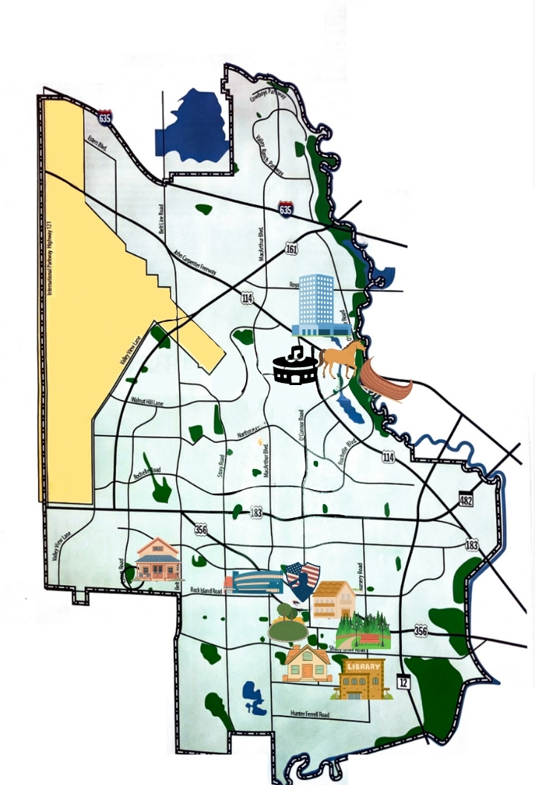

Explore Irving’s Landmarks
Click on the highlighted spots on the map to discover their history and stories.

Click on the map below to explore landmarks and learn their stories.
Explore the MapClick on the highlighted spots on the map to discover their history and stories.